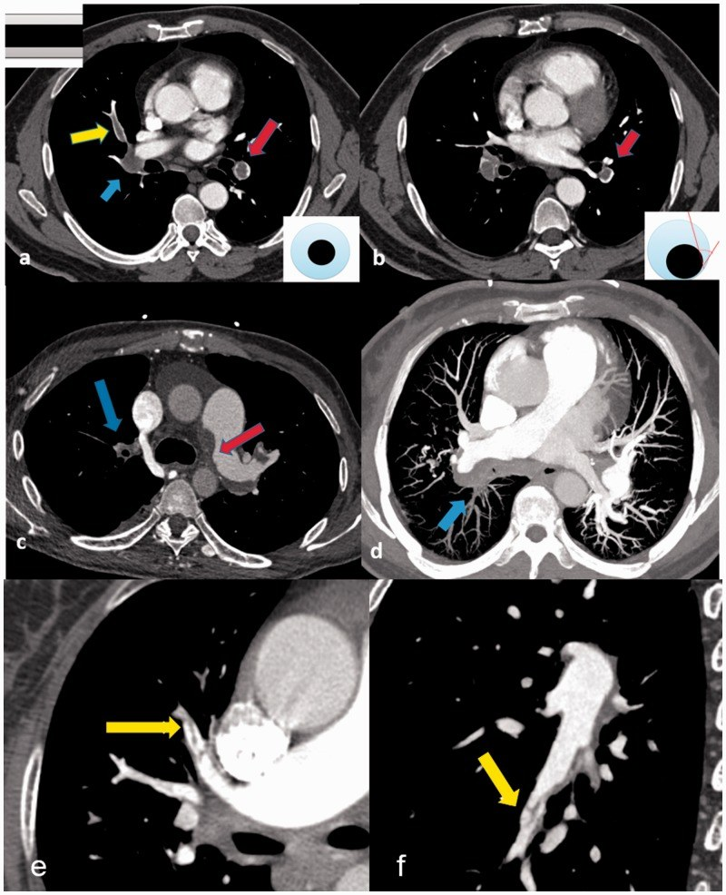
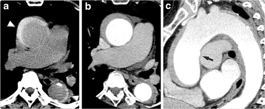

070 — Thuyên tắc phổi & hội chứng ĐMC cấp / PE & Acute aortic syndrome
Tags: pattern:khuyet-thuoc vung:mach-nguc protocol:CTA-nguc
Mức chắc chắn (certainty): tổng hợp y văn (literature synthesis) — nhóm tự biên từ y văn mở, chưa gắn ca nguyên văn đơn lẻ.
1. Tổng quan — CTA đọc gì + ngưỡng cản quang
- CTA ngực chẩn đoán PE khi thuốc cản quang động mạch phổi đạt ≥ 250 HU ở thân chung ĐMP (dưới ngưỡng này giả khuyết thuốc do pha thuốc).
- Khuyết thuốc cấp (acute): giữ nguyên khẩu kính mạch, trung tâm (polo mint) hoặc dọc (railway track), góc nhọn (acute angle) với thành mạch.
- Khuyết thuốc mạn (chronic): khẩu kính hẹp/cụt, góc tù (obtuse), web/band, pouch, vôi hóa nội mạc.
- TẠI SAO góc quyết định cấp/mạn: cục tươi nổi trong lòng → tiếp tuyến nhọn; xơ hóa dính thành lâu ngày → tù, kéo màng.

a–b: cấp — polo mint, railway track, góc nhọn (có sơ đồ góc kèm). c–f: mạn — góc tù, pouch, web. Nguồn: Liu et al., Pulm Circ 2020 Fig. 1, CC BY-NC 4.0.2. Gamut khuyết thuốc ĐMP + đau ngực xé
- PE cấp: Wells cao, DVT, sau mổ/nằm lâu, ung thư (nguy cơ gấp 4–6 lần).
- PE mạn/CTEPH: tiền sử PE/DVT, tăng áp phổi, web/band.
- Giả PE: sarcoma ĐMP (không tan dù kháng đông + ngấm thuốc không đều + PET bắt mạnh), Takayasu (double-ring), Behçet (phình + huyết khối tại chỗ), streak artifact (mất ở thì muộn).
- Hội chứng ĐMC cấp: đau xé lan lưng, Stanford A (lên) mổ cấp cứu / B (xuống) nội khoa-TEVAR; bóc tách (flap), IMH (liềm 50–70 HU tiền tiêm), PAU (loét).
3. Bảng so sánh
| Thực thể (entity) | Hình ảnh điển hình (CTA) | Chốt vào (rule-in) | Chốt loại (rule-out) | Gợi ý xác nhận |
|---|---|---|---|---|
| PE cấp | Khuyết trung tâm/dọc, góc nhọn, giữ khẩu kính | Góc nhọn + ≥ 250 HU thân ĐMP + Wells cao | Góc tù/web/vôi hóa → mạn | Kháng đông, siêu âm DVT chi dưới |
| PE mạn/CTEPH | Góc tù + web/band + pouch, hẹp/cụt mạch | Web + tiền sử PE + tăng áp phổi | Góc nhọn + mới khởi phát → cấp | Thông tim phải, phẫu thuật bóc nội mạc |
| Sarcoma ĐMP | Khuyết lấp toàn thân ĐMP, lobulated/tongue, ngấm không đều | Không tan dù kháng đông + PET bắt mạnh | Tan sau kháng đông → huyết khối | Sinh thiết, hội chẩn ung bướu |
| Bóc tách ĐMC | Vạt nội mạc (flap), lòng thật nhỏ-liên tục gốc, lòng giả lớn + cobweb + beak | Flap + 2 lòng + Stanford A/B | Liềm đặc không flap tiền tiêm → IMH | ECG-gated CTA, mổ/TEVAR theo Stanford |
| IMH | Liềm tăng tỷ trọng 50–70 HU trên CT TRƯỚC TIÊM, không flap | Liềm tiền tiêm + đau xé + không flap | Có flap rõ → bóc tách điển hình | Theo dõi sát (tiến triển thành bóc tách) |
| PAU | Loét lõm vào thành + máu tụ thành | Ổ loét + xơ vữa nặng người già | Flap dài → bóc tách | Stent-graft khi vỡ dọa |

a: liềm tăng tỷ trọng tiền tiêm. b–c: CTA cùng BN. Nguồn: Ueda et al., Insights into Imaging 2012 Fig. 4, CC BY 4.0.4. Protocol CTA + quá tải thất phải
- Bolus-tracking thân ĐMP (ngưỡng ≥ 250 HU), lát mỏng, MIP/MPR dọc mạch (railway track chỉ hiện khi cắt dọc đúng).
- Dấu quá tải thất phải (tiên lượng nặng): RV/LV > 1,0, vách liên thất dẹt/đẩy sang trái tạo thất trái hình chữ D (D-shaped LV) trên lát cắt trục ngắn qua tâm thất, trào ngược thuốc vào tĩnh mạch chủ dưới.
- Nghi ĐMC: ECG-gated (khử giả flap do chuyển động gốc), thêm thì trước tiêm (IMH liềm 50–70 HU chỉ hiện tiền tiêm).
flowchart TD
A[Đau ngực + khó thở] --> B{CTA ≥250 HU?}
B -->|Không| C[Chụp lại, loại streak artifact]
B -->|Có| D{Khuyết ĐMP góc nhọn + giữ khẩu kính?}
D -->|Có| E[PE cấp + đánh giá RV/LV]
D -->|Không| F{Flap 2 lòng ĐMC?}
F -->|Có| G[Stanford A mổ / B nội-TEVAR]
F -->|Không| H{Liềm 50-70 HU tiền tiêm?}
H -->|Có| I[IMH theo dõi sát]
H -->|Không| J[Góc tù/web = mạn; sarcoma nếu không tan]
5. Cạm bẫy
- Streak artifact: khuyết thì sớm, mất thì muộn (dual-phase) — đừng gọi PE.
- Hạch/van giả khuyết: cuộn MPR dọc xác nhận, đừng đọc 1 lát.
- IMH bỏ sót: quên thì trước tiêm là mất liềm 50–70 HU — protocol phải có non-contrast.
- Sarcoma gọi nhầm PE mạn: không tan sau kháng đông đầy đủ → PET + sinh thiết, đừng tăng liều vô ích.
6. Tự lượng giá — Blind Quiz
Ca 1 — Nhìn panel a–b, gọi tên dấu + phân biệt cấp/mạn.
- Hỏi: polo mint ở đâu? railway track ở đâu? Góc nhọn hay tù? Sơ đồ góc kèm nói gì?
Bấm để hiện đáp án
- a: polo mint ĐMP thùy dưới trái + railway track ĐM thùy giữa phải + tắc ĐM thùy dưới phải; b: khuyết lệch tâm góc nhọn → PE cấp. Sơ đồ góc: nhọn = cấp, tù = mạn (panel c–f).
- Nguồn: Liu et al., Fig. 1, CC BY-NC 4.0.
Ca 2 — Đau ngực xé, CT tiền tiêm thấy liềm đặc thành ĐMC, CTA không flap:
Bấm để hiện đáp án
- IMH: liềm 50–70 HU tiền tiêm + không flap (đối chiếu ảnh mục 3) — theo dõi sát vì có thể tiến triển thành bóc tách/ vỡ.
- Nguồn: Ueda et al., Fig. 4, CC BY 4.0.
Bài liên quan chéo
- 001 – Tổng quan hệ Ngực
- 031 – Viêm phổi mẫu hình (nhồi máu phổi)
- 040 – Tràn dịch màng phổi (tràn máu màng phổi do vỡ)
Không dùng để chẩn đoán độc lập khi chưa có người hướng dẫn.